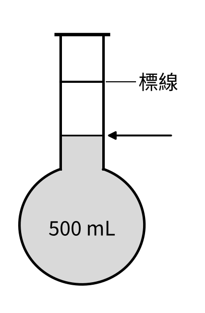

基礎題
將 2 M 之硫酸 100 毫升與 2 M 之硫酸 200 毫升相互混合後，硫酸的濃度為何？（體積有加成性）
- (A) 1.5 M
- (B) 1.75 M
- (C) 2.0 M
- (D) 2.5 M
看答案與詳解
答案：(C)
M＝0.6/0.3＝2.0 M。 (C) ✔
同濃度溶液混合，濃度不變。
〔易錯〕相同濃度混合不必算，濃度仍相同
將一瓶濃度 2 M 的溶液倒去 1／2 瓶，再用蒸餾水加滿。
(1) 此時溶液的濃度為多少 M？
看答案與詳解
答案：1 M
設瓶子體積 V：剩餘溶質＝2×V／2＝V mol（以 L 計），加水至 V，
M＝V／V＝1 M。（稀釋公式 M1V1＝M2V2：2×V／2＝M2×V → M2＝1）
〔易錯〕倒掉一半不改變濃度，加水才改變
欲配製 0.50 M 的 NaOH 水溶液 200 mL，需稱取 NaOH 固體多少克？（NaOH＝40）
- (A) 2.0
- (B) 4.0
- (C) 8.0
- (D) 10
- (E) 20
看答案與詳解
答案：(B)
質量＝0.10×40＝4.0 g
將 6.0 M 的鹽酸 50 mL 加水稀釋成 300 mL，稀釋後的濃度為多少 M？
- (A) 0.50
- (B) 1.0
- (C) 1.2
- (D) 2.0
- (E) 3.0
看答案與詳解
答案：(B)
6.0×50＝M2×300 → M2＝1.0 M
用固體溶質配製準確濃度的水溶液時，最後「加水至標線」這個步驟應使用下列哪一種器材？
- (A) 燒杯
- (B) 量筒
- (C) 容量瓶
- (D) 錐形瓶
- (E) 試管
看答案與詳解
答案：(C)
燒杯、錐形瓶的刻度只是粗略參考；量筒用來量取液體，不用來定容。
欲配製 0.1 M 250 mL 過錳酸鉀水溶液，關於配製過程及注意事項哪些正確？（過錳酸鉀每莫耳質量 158 克）（多選）
- (A) 須取 3.95 克過錳酸鉀
- (B) 須使用 250 mL 燒杯精準配製
- (C) 須使用 250 mL 容量瓶配製
- (D) 配製過程，須先用少量水溶解，最終再加水至 250 mL 刻度線
- (E) 直接在過錳酸鉀固體中加水 250 mL 即可
看答案與詳解
答案：(A)(C)(D)
(B) ✘ 燒杯刻度只是概略值，精準配製要用容量瓶。
(C) ✔ (D) ✔ 正確步驟：少量水溶解 → 移入容量瓶 → 加水至刻度線。
(E) ✘ 加 250 mL 水後溶液體積不是 250 mL，體積莫耳濃度以溶液體積為準。
〔易錯〕「加水 250 mL」與「加水至 250 mL」不同。
▲ 第 3-07～3-08 題為題組：實驗室的鹽酸藥瓶上標示為 12.0 M HCl(aq)，某生想要配製 100.0 mL 的 1.20 M HCl(aq)。
用下列何種方法配製較為適宜？
- (A) 取 5.0 毫升的 12.0 M HCl(aq)加入 95.0 毫升蒸餾水
- (B) 取 10.0 毫升的 12.0 M HCl(aq)加入 90.0 毫升蒸餾水
- (C) 取 10.0 毫升的 12.0 M HCl(aq)，以蒸餾水稀釋成 100.0 毫升溶液
- (D) 取 5.0 毫升的 12.0 M HCl(aq)，以蒸餾水稀釋成 100.0 毫升溶液
- (E) 取 1.0 毫升的 12.0 M HCl(aq)，以蒸餾水稀釋成 100.0 毫升溶液
看答案與詳解
答案：(C)
12.0 × V1 = 1.20 × 100.0 → V1 = 10.0 mL
應取 10.0 mL 濃鹽酸「稀釋至」總體積 100.0 mL；(B) 直接加 90.0 mL 水，體積不一定具加成性，總體積不保證是 100.0 mL。
承上題，所需的實驗器材組合為何？
- (A) 10毫升量筒、100毫升容量瓶
- (B) 10毫升移液吸管、100毫升容量瓶
- (C) 10毫升分度吸量管、100毫升量筒
- (D) 10毫升量筒、100毫升量筒
- (E) 10毫升量筒、100毫升燒杯
看答案與詳解
答案：(B)
取 10.0 mL 濃溶液用精確的 10 mL 移液吸管；
稀釋定容用 100 mL 容量瓶。
量筒、燒杯精確度不足。
將 1.0 M 的 H2SO4(aq) 200 mL 和 2.0 M 的 H2SO4(aq) 300 mL 相混合後，若體積具加成性，混合後其體積莫耳濃度變為若干 M？
- (A) 1.6
- (B) 1.7
- (C) 1.8
- (D) 1.2
- (E) 1.4
看答案與詳解
答案：(A)
V = 200 + 300 = 500 mL = 0.500 L
M = 0.80／0.500 = 1.6 M
欲使 15% 的 NaOH 溶液 400 克，其濃度變為 10%，需加 5% 的 NaOH 溶液若干克？（提示：溶液混合前、後，溶質質量與莫耳數均不變，質量與莫耳數可加成）
- (A) 100 克
- (B) 200 克
- (C) 300 克
- (D) 400 克
- (E) 500 克
看答案與詳解
答案：(D)
400 × 15%＋x × 5%＝(400＋x) × 10%
60＋0.05x＝40＋0.10x → x＝400 g
將 10% 的食鹽水 300 g 與 25% 的食鹽水 200 g 混合，混合後食鹽水的重量百分率濃度為多少？
- (A) 15%
- (B) 16%
- (C) 17.5%
- (D) 18%
- (E) 20%
看答案與詳解
答案：(B)
溶質＝300×10%＋200×25%＝30＋50＝80 g
溶液＝300＋200＝500 g → 80／500＝16%
進階題
王同學準備了 10.0 克氫氧化鈉與 500 mL 容量瓶，想要配製 500 mL 的 0.5 M 氫氧化鈉溶液。王同學將氫氧化鈉加蒸餾水溶解後倒入容量瓶中，液面高度如附圖箭頭處所示。下列有關此時瓶中溶液的敘述，哪些正確？（NaOH＝40）（多選）

- (A) 此溶液中含有 0.5 莫耳的氫氧化鈉
- (B) 容量瓶中氫氧化鈉溶液的濃度為 0.5 M
- (C) 容量瓶中氫氧化鈉溶液的濃度略高於 0.5 M
- (D) 若欲使容量瓶中氫氧化鈉溶液的濃度為 0.5 M，需再加蒸餾水，使溶液液面至容量瓶刻度為 500 毫升處
- (E) 若欲使容量瓶中氫氧化鈉溶液的濃度為 0.5 M，需再加氫氧化鈉，使溶液液面至容量瓶刻度為 500 毫升處
看答案與詳解
答案：(C)(D)
液面未達 500 mL 刻度 → 溶液體積小於 500 mL，濃度略高於 0.25 mol／0.5 L＝0.5 M → (B) ✘、(C) ✔。
(D) ✔ 加蒸餾水至刻度，體積恰為 500 mL，濃度為 0.5 M。
(E) ✘ 再加 NaOH 會使濃度更高。
配製氫氧化鈉水溶液時，下列哪一項操作會使所得溶液的濃度偏高？
- (A) 定容時仰視標線（視線低於液面）
- (B) 定容時俯視標線（視線高於液面）
- (C) 溶解用的燒杯沒有用蒸餾水沖洗，沖洗液也沒有倒入容量瓶
- (D) 容量瓶使用前內壁殘留少量蒸餾水
- (E) 搖勻後發現液面低於標線，再加水到標線
看答案與詳解
答案：(B)
(A) ✘ 仰視時實際液面已超過標線，體積偏大 → 濃度偏低。
(B) ✔ 俯視時實際液面還沒到標線，體積偏小 → 濃度偏高。
(C) ✘ 部分溶質留在燒杯，溶質偏少 → 濃度偏低。
(D) ✘ 之後本來就要加水，不影響。
(E) ✘ 搖勻後液面略降是因為液體沾在瓶頸，再加水會使體積偏大 → 濃度偏低。
將 0.20 M 的 NaCl 水溶液 100 mL 與 0.10 M 的 CaCl2 水溶液 100 mL 混合（體積可加成），下列有關混合後溶液的敘述，哪些正確？（多選）
- (A) [Na+]＝0.10 M
- (B) [Ca2+]＝0.050 M
- (C) [Cl−]＝0.20 M
- (D) [Cl−]＝0.15 M
- (E) 溶液中陽離子的總莫耳數等於陰離子的總莫耳數
看答案與詳解
答案：(A)(B)(C)
Na+：0.020 mol → 0.10 M (A) ✔
Ca2+：0.010 mol → 0.050 M (B) ✔
Cl−：0.020＋0.010×2＝0.040 mol → 0.20 M (C) ✔、(D) ✘
(E) ✘ 陽離子共 0.030 mol、陰離子 0.040 mol；相等的是「總電量」，不是莫耳數。
取 2.0 M 的氫氧化鈉水溶液 50 mL，想稀釋成 0.25 M，需要加入多少 mL 的水？（體積可加成）
- (A) 150
- (B) 200
- (C) 350
- (D) 400
- (E) 450
看答案與詳解
答案：(C)
需加水＝400−50＝350 mL
〔易錯〕算出來的 400 mL 是總體積，不是加水量。
‰ 為千分之一濃度（重量），1‰ 意即每 1000 克溶液中含有 1 克溶質，日本鰻在河川中成長，將成熟時，洄游數千公里到馬里亞納群島海域產卵。孵化後，幼魚隨北赤道洋流與黑潮漂游到近岸，再游進河川。每年冬季都可見日本、韓國、臺灣、大陸等地漁民於沿岸捕撈鰻苗供養殖所需。鰻魚可感知鹽度以找尋適當河川。已知表層之黑潮水鹽度為 32‰，河水鹽度為 2‰，假設水體充分混合，當鰻魚所在水域之鹽度為 20‰ 時，黑潮水與河水混合的重量比例為何？
- (A) 3：2
- (B) 2：3
- (C) 2：1
- (D) 3：1
- (E) 1：2
看答案與詳解
答案：(A)
【快解】距離反比：32 距 20 為 12，2 距 20 為 18 → 重量比＝18：12＝3：2。
已知濃度 20% 的氨水 100 mL，比重為 0.85，若在此溶液中加入 60 mL 蒸餾水稀釋，則氨水溶液的體積莫耳濃度為以下何者？（NH3 分子量＝17）
- (A) 3.22 M
- (B) 4.25 M
- (C) 4.50 M
- (D) 6.25 M
- (E) 9.52 M
看答案與詳解
答案：(D)
NH3 質量＝85×20%＝17 g → 17÷17＝1 mol
稀釋後體積＝100＋60＝160 mL（視為體積可加成）
C＝1 mol÷0.160 L＝6.25 M
驗算：原濃度 C＝1000×0.85×0.20÷17＝10 M；稀釋 10×100＝C'×160 → C'＝6.25 M ✓
以 90%、密度 1.5 g／mL 的濃硫酸，配製 1.5 M、密度 1.1 g／mL 的稀硫酸溶液 450 mL，需濃硫酸多少 mL？（H2SO4＝98）
- (A) 45
- (B) 49
- (C) 54
- (D) 90
- (E) 98
看答案與詳解
答案：(B)
濃硫酸每 mL 含 H2SO4：1.5×0.9＝1.35 g。
體積＝66.15/1.35＝49 mL，選 (B)。稀硫酸的密度 1.1 是多餘條件。
〔易錯〕溶質的量守恆，與稀溶液的密度無關。
以 98.0% 的硫酸配製成 3.00 M 的硫酸（比重 1.20）1.00 升時，需加入多少克的蒸餾水？（原子量 H＝1、O＝16、S＝32）
- (A) 780
- (B) 860
- (C) 900
- (D) 980
- (E) 1102
看答案與詳解
答案：(C)
需 98.0% 濃硫酸質量＝294／0.98＝300 g
配成的稀硫酸質量＝1000 mL×1.20 g／mL＝1200 g
需加蒸餾水＝1200－300＝900 g
比重 1.20，含 30.0% 的醋酸(CH3COOH)水溶液 200 毫升和 x M 的醋酸(CH3COOH)水溶液 600 毫升混合，混合後得 3.0 M 醋酸溶液(設體積有加成性)，則 x 為若干？(CH3COOH 分子量＝60)
- (A) 4.5
- (B) 4.0
- (C) 3.0
- (D) 2.0
- (E) 1.5
看答案與詳解
答案：(D)
混合後：3.0 M×0.800 L＝2.40 mol
1.20＋x×0.600＝2.40 → x＝2.0
故選 (D)。
現有某酸水溶液濃度 50%，若欲加水配製成 10%、密度 1.1 g／cm3 的溶液 1.0 L，則需加入蒸餾水若干 g？
- (A) 660
- (B) 760
- (C) 800
- (D) 810
- (E) 880
看答案與詳解
答案：(E)
需 50% 酸液：110／0.50 = 220 g
加水 = 1100 − 220 = 880 g
大考／素養題
欲將比重 1.84、濃度 98% 硫酸溶液，稀釋成比重 1.50、濃度 6.0 M 的稀硫酸 1 L，下列敘述哪些正確？（多選）
- (A) 原硫酸溶液的濃度為 18.4 M
- (B) 稀釋前應吸取原硫酸溶液 326 mL
- (C) 稀釋前應吸取原硫酸溶液 588 g
- (D) 吸取原硫酸溶液後，應加入 674 mL 蒸餾水
- (E) 稀釋過程中溶液會放熱
看答案與詳解
答案：(A)(B)(E)
需 H2SO4 6.0 mol＝588 g → 原硫酸溶液 588÷0.98＝600 g → 體積 600÷1.84＝326 mL，(B) ✔、(C) ✘（588 g 是純硫酸的質量）。
(D) ✘ 稀釋後溶液 1000 mL×1.50＝1500 g，需加水 1500−600＝900 g＝900 mL；體積不可直接相加，1000−326＝674 是錯的。
(E) ✔ 濃硫酸稀釋會大量放熱。
阿中將濃硫酸配製成稀硫酸的過程如下：
步驟一：將「儀器甲」裝上安全吸球，吸取重量百分率濃度 98%、比重 1.6 的濃硫酸 V 毫升。
步驟二：取一個標示 1 公升的「儀器乙」，先裝入適量的蒸餾水。
步驟三：再將步驟一的濃硫酸 V 毫升加入，並充分溶解。
步驟四：再加入蒸餾水，直到液面的彎月面與儀器乙的標線對齊，成為 2.0 M、比重 1.2 的稀硫酸。（H2SO4＝98）
根據上述步驟，下列敘述哪些正確？（多選）
- (A) 「儀器甲」為滴定管，其用途為精確量取液體體積
- (B) 「儀器乙」為容量瓶，其用途為精確量取體積，用於配製體積莫耳濃度溶液
- (C) 稀釋時應將濃硫酸緩緩加入適量水中
- (D) 步驟一吸取濃硫酸 V 毫升，V 為 125
- (E) 過程中總共使用了 875 毫升蒸餾水
看答案與詳解
答案：(B)(C)(D)
(B) ✔ 容量瓶用於配製精確體積的溶液。
(C) ✔ 濃硫酸溶於水大量放熱，應「酸入水」緩緩加入並攪拌。
(D) ✔ H2SO4＝2.0×1＝2.0 mol＝196 g ⇒ 濃硫酸質量＝196÷0.98＝200 g ⇒ V＝200÷1.6＝125 mL。
(E) ✘ 稀硫酸質量＝1000×1.2＝1200 g，加入水＝1200−200＝1000 g≈1000 mL；溶液體積不具加成性，不能用 1000−125＝875 計算。
欲將溶液甲：比重 1.84，濃度 98% 的硫酸溶液 100 mL，加水稀釋成溶液乙：比重 1.40，濃度 4.6 M 的稀硫酸，下列哪些正確？（純水比重 1.0；應選 3 項）（多選）
- (A) 溶液甲硫酸濃度為 18.4 M
- (B) 溶液乙的總體積為 400 mL
- (C) 溶液乙總重為 600 克
- (D) 稀釋時共需加水 300 mL
- (E) 稀釋時將溶液甲加入水，溶液會放熱，總體積收縮 76 mL
看答案與詳解
答案：(A)(B)(E)
(A) ✔ 1.84 mol ÷ 0.100 L＝18.4 M。
(B) ✔ 稀釋前後溶質莫耳數不變：V乙＝1.84 ÷ 4.6＝0.400 L＝400 mL。
(C) ✘ 溶液乙＝400 mL × 1.40＝560 g。
(D) ✘ 加水＝560 − 184＝376 g＝376 mL。
(E) ✔ 100＋376＝476 mL，實際只有 400 mL，縮小 76 mL；濃硫酸稀釋會放熱。
市售漂白水中次氯酸鈉的重量百分率濃度約為 5.0%。衛生單位建議一般環境消毒使用 500 ppm 的稀釋漂白水。（各溶液密度均視為 1.0 g／mL）
(1) 5.0% 相當於多少 ppm？應將市售漂白水稀釋成幾倍？
(2) 欲配製 500 ppm 的稀釋漂白水 2.0 L，需取市售漂白水多少 mL？
看答案與詳解
答案：(1) 5.0×104 ppm；100 倍 (2) 20 mL
(2) 稀釋前後溶質質量不變：取 V mL 原液，V×5.0×104＝2000×500 → V＝20 mL
（取 20 mL 市售漂白水，加水到總體積 2.0 L。）